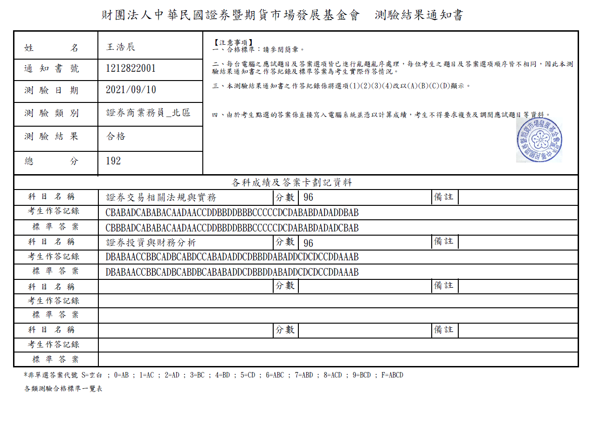

Wang Hao Chen
Taipei, TW
Email: whc@bachelor-studio.com
SUMMARY
- Advanced level programming knowledge in C++, including multithreading, metaprogramming, and socket programming.
- Enhanced performance and code quality through refactoring legacy codebases.
- Developed Python scripts for automating day-to-day activities.
- Experience in developing high-frequency trading software on Linux platforms.
- Skilled in server development, database design, and Node.js C++ addon development.
- Certified securities specialist.
SKILLS
Programming Languages: C++, Python, SQL
Libraries: Vulkan, DirectX, Qt, boost, tbb
Tools: Vim, Visual Studio, Visual Code
Operating Systems: Linux, Windows
EDUCATION
Master of Science in Computer and Information Engineering, National Dong Hwa University
WORK EXPERIENCE
Weintek
Software Engineer | October 2021-Present
- Refactored legacy code.
- Developed IEC 61850 server (IEC61850 is an international standard defining communication protocols for intelligent electronic devices at electrical substations).
- Developed new features.
VICI Holdings
Senior Software Engineer | April 2021-October 2021
- Designed and implemented an internal message queue library, and provided a native C++ NodeJS addon.
- Refactored a legacy trading system.
- Created a trading monitor with Electron and Vue3.
- Designed and implemented a risk management system framework.
Reallusion
Senior Software Engineer | May 2020-March 2021
Software Engineer | July 2017-May 2020
- Designed and implemented the Omniverse Plugin.
- Designed and implemented both the backend and frontend of Smart Gallery in C++ with the Qt framework, an application/plug-in that can synchronize thousands of 3D contents created or edited by users between the cloud and local storage.
- Improved the performance of iClone (developed in C++) by 3 times with thread-rendering.
- Designed and implemented an internally improved PostgreSQL library in C++, simplifying the development flows of native value type conversion between C++ and SQL and database communication. This significantly increased the speed of implementing DB communication functions for C++ developers, even for those who have never learned SQL before.
- Decreased the loading time and resource processing time of all products by 43% through multithreading.
- Improved glow and bloom effects and solved color banding issues in iClone7.
- Implemented both alembic import and export features.
ACTIVITIES AND AWARDS
2018 Smart City Expo City Innovation Application Award
Engineer | 2016-2017
- Designed and implemented both the Android application and background server.
- Implemented a drone task system.
CGW 2017 Excellent Paper Award
Author of the awarded paper: "Construction of 3D Game Streaming Platform"
CERTIFICATIONS
Certified Securities Specialist
